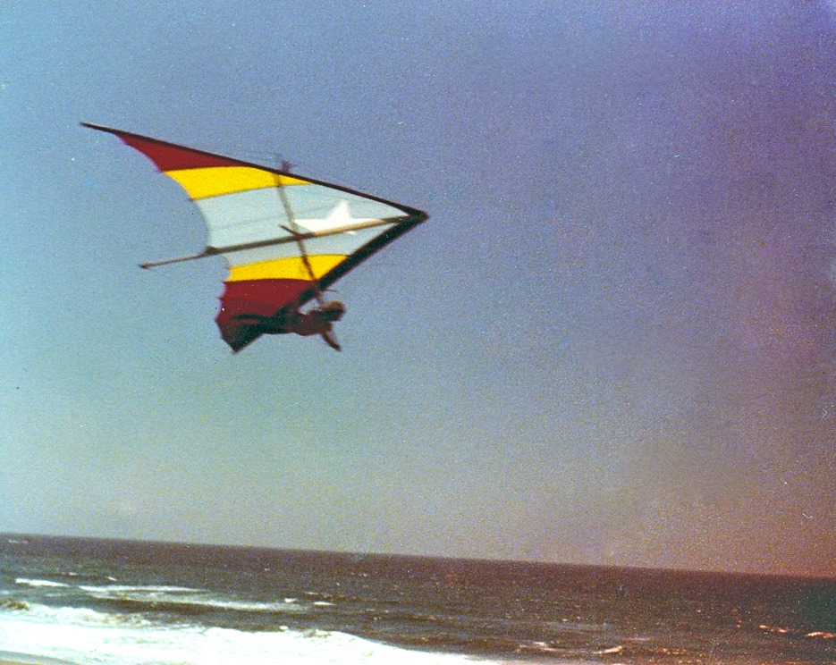
Eves Tall Chief
@ Funston my Flexi-and Me.
Eves Tall Chief
Marginal & Eves Tall-Chief W/Marks "Alto Strat ".
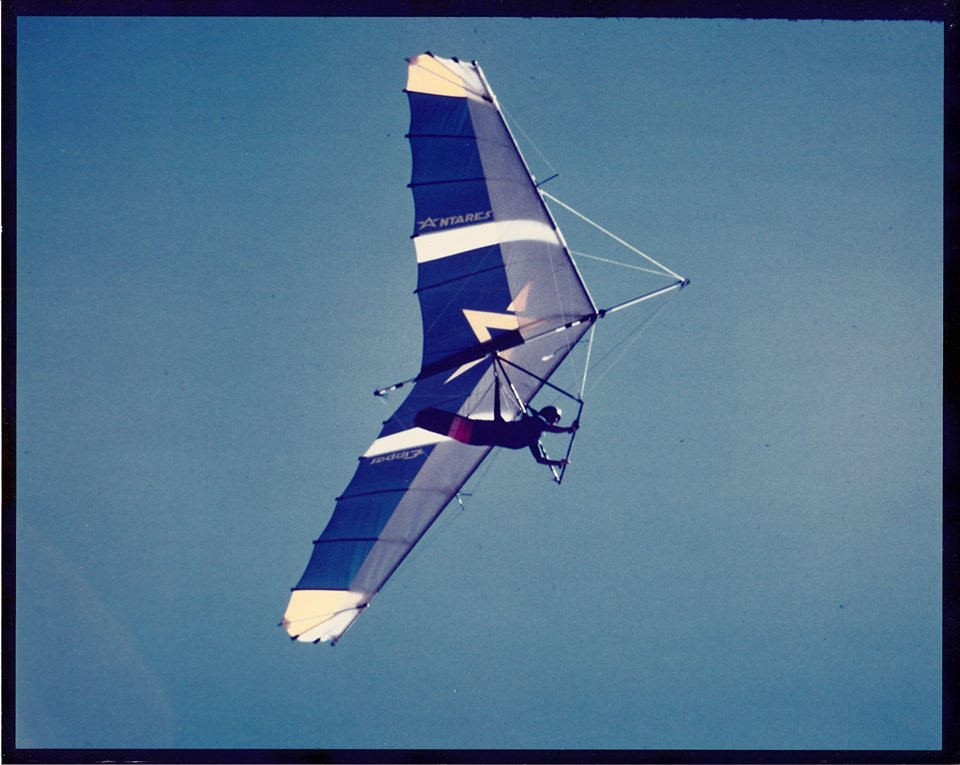
Eves & his Antares .
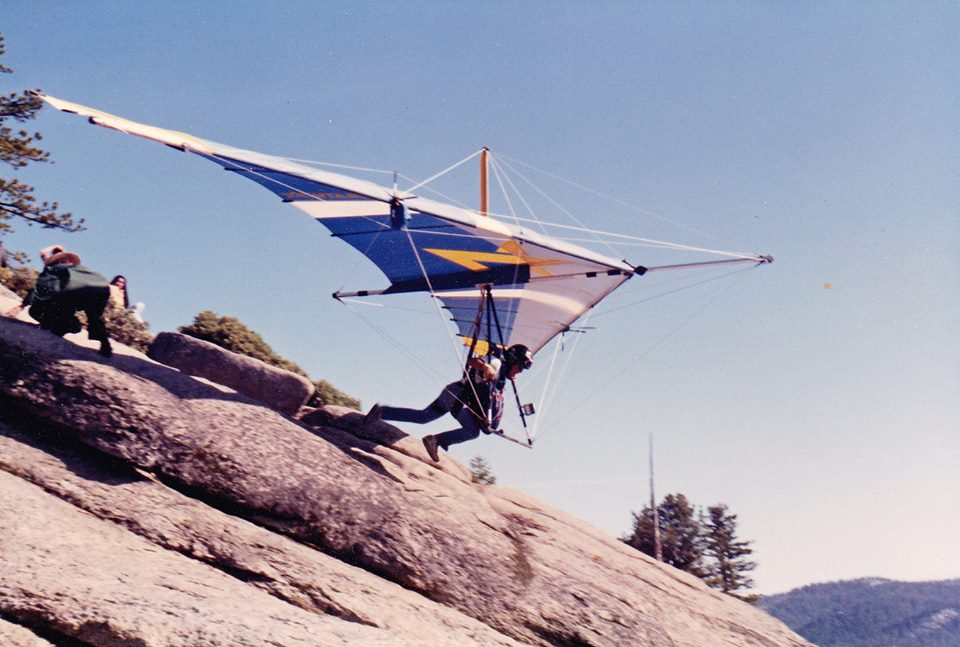
My Antares,Eipperformance ,1979.etc.etc.
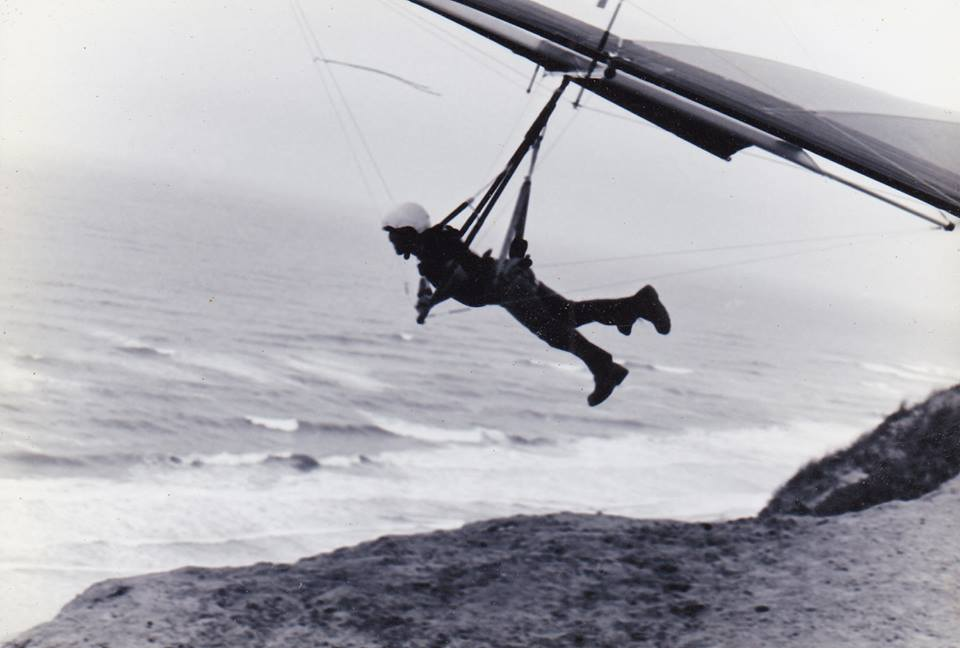
My Flexie-3 First production wing .ETC
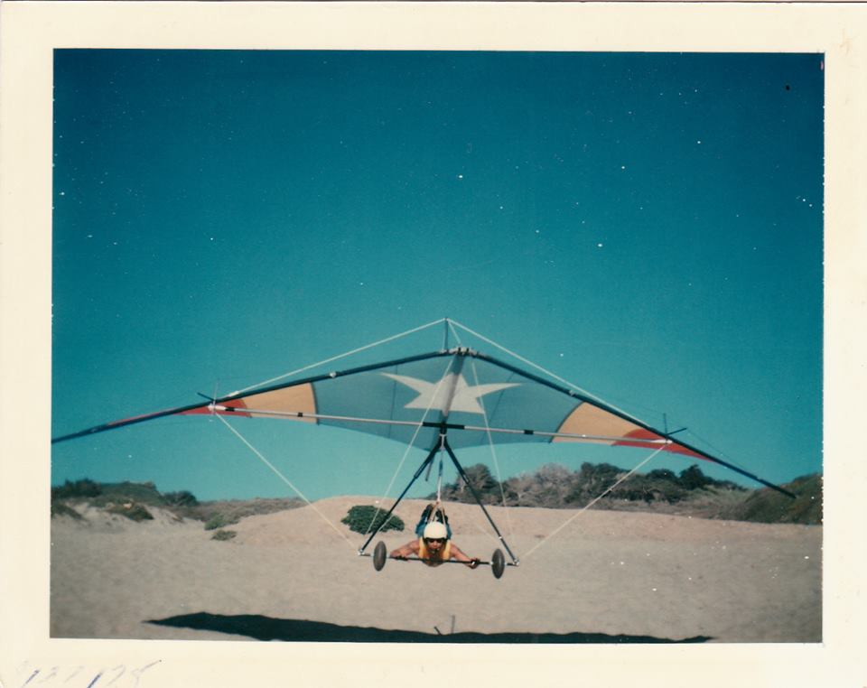
Me and my Eipper -etc.
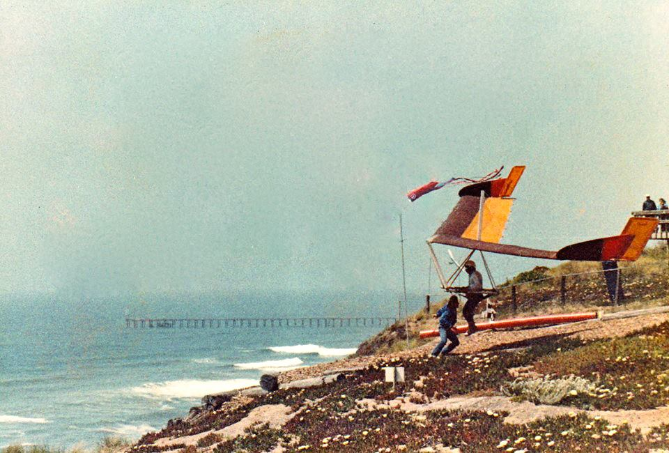
Eves Tall-Chief @ The Fort Eves & Billy Armor .Fledge.3.

Racanilli @ Brad Martin.
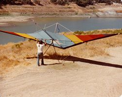 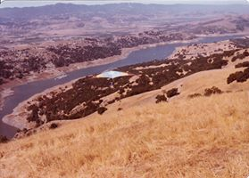
ETC & My Flexi @ Anderson Res.
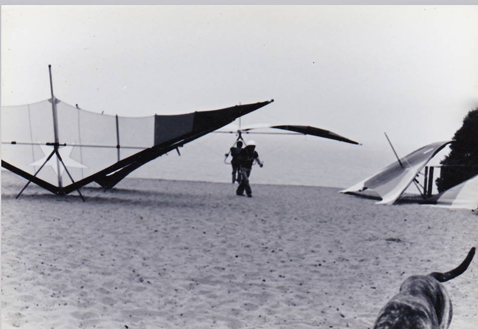
In the Day this is what we wore and the Gliders looked like this.
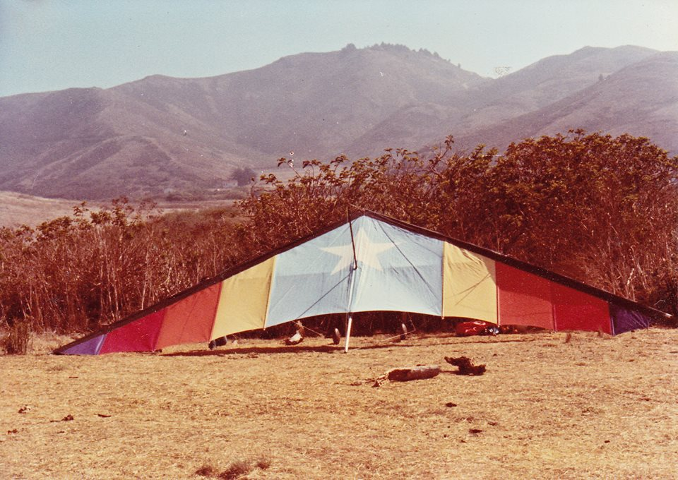
Fort Kronkite my Flexi-3.
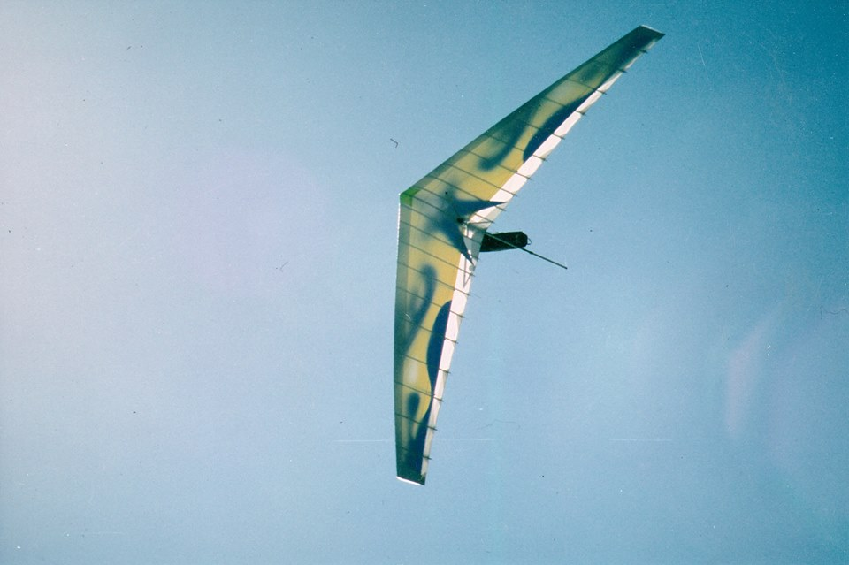
OOPPS Glider got away from me again etc.etc.
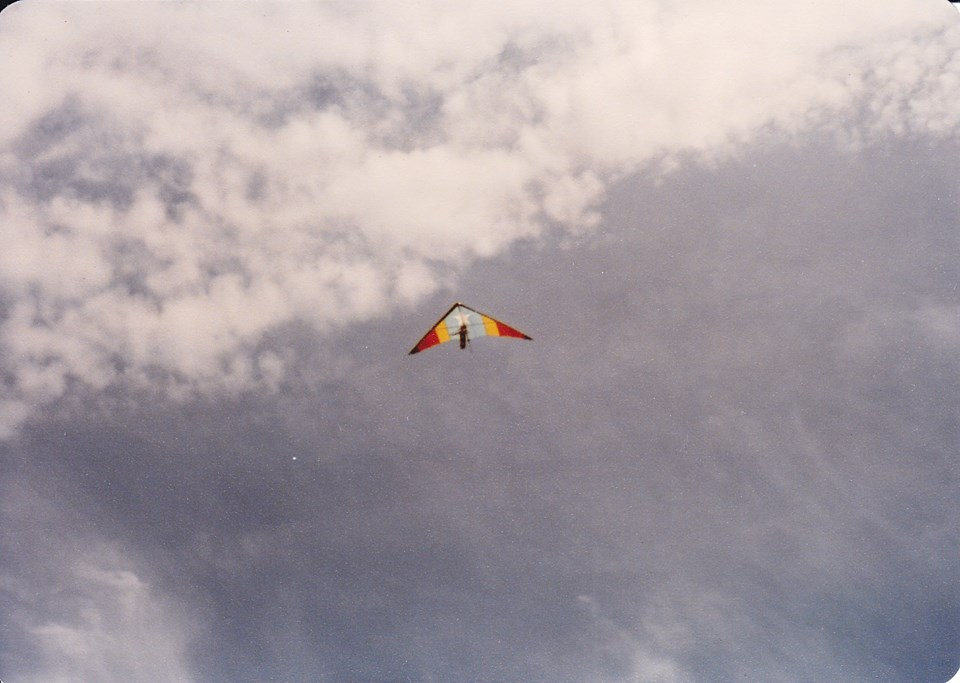
My 1st. Custom wing Flexi-3 Eipper.
Eves Tall-Chief: Rich Hiegel bet you liked the way the Flexi-3 flew ? I also had a felxi-flyer. Tried a Cumie opted for the Antares as it was built by Ed Ceaser and Cronk. etc.etc.
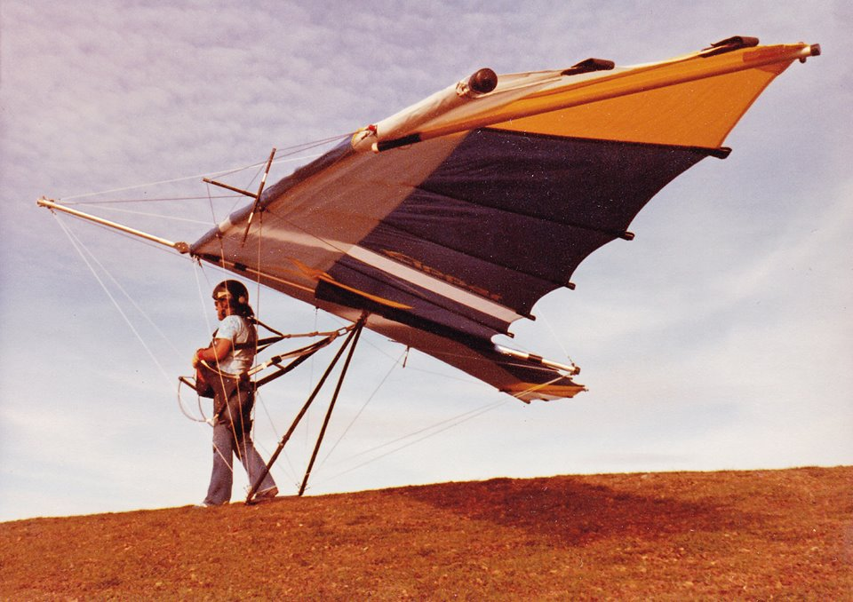
My Anteater ,Rac called it "Dome Splatus Dune Diver. etc.etc.